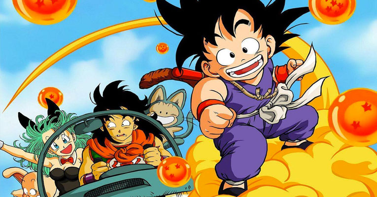

20 curiosidades sobre anime e mangá que todo otaku deve saber
Existem pelo menos 20 curiosidades sobre anime e mangá espalhadas pela internet que todo otaku deve saber.
Se você é um otaku “das antigas”, no melhor sentido da palavra, já deve conhecer tudo ou quase tudo sobre o vasto universo dos anime e mangás.
Mas, se você começou a se interessar pelo assunto a pouco tempo, veja uma pequena lista de curiosidades disponíveis na web, que podem te iniciar no nível básico deste universo dos desenhos japoneses.
20 curiosidades sobre anime e mangás
- A palavra anime não admite plural, sendo anime mesmo o plural de anime.
- Anime é a palavra que abrevia o termo “Animação” no Japão. E tudo teve início em 1917 pelas mãos dos artistas: Shimokawa Oten, Jun’ichi Kouchi e Seitaro Kitayama.
- Anime não pode ser considerado apenas sinônimo de “cartoon”, e sim uma forma de arte que trata de temas mais profundos e emocionais.
- A ordem de leitura de um mangá (quadrinhos) japonês é a inversa da ocidental.
- No Japão, calcula-se que 40 novos anime estreiam na televisão, semanalmente.